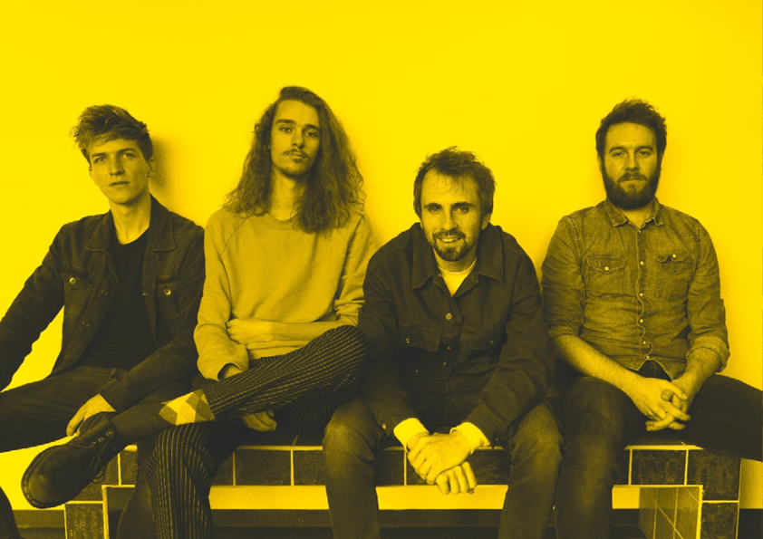
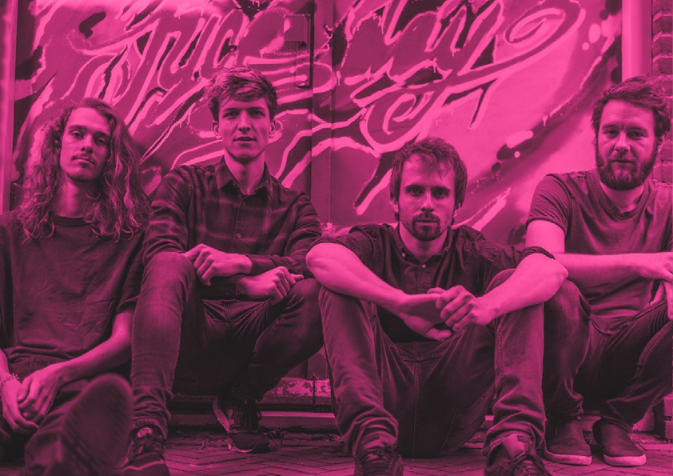
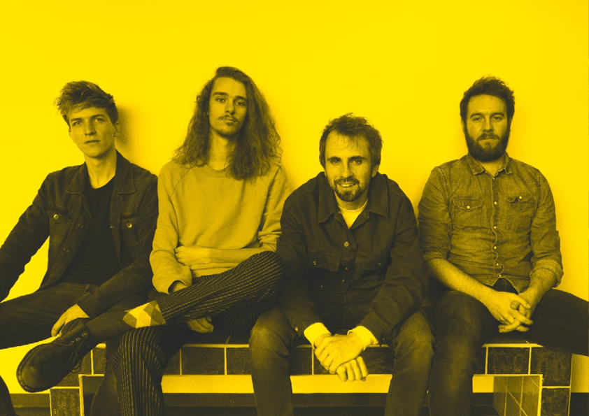
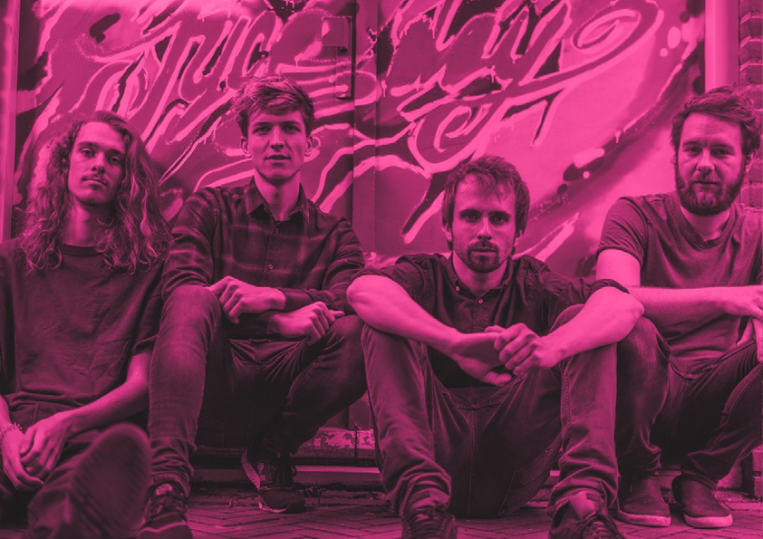

Inspiratie
De inspiratie die ik heb gebruikt komt van verschillende plekken. Een aantal daarvan staan hieronder weergegeven. Jamie Oliver heeft de meest duidelijke brandguide die ik ben tegengekomen. Heel gedetailleerd, goed vormgegeven en het is allemaal duidelijk beschreven. De brandguide van UrbanOutfitters is bijzonder vanwege de visie die ze hebben waarin ze eigenlijk aangegeven dat ze niet echt een kleurenpalet hebben maar dat ze zich steeds aanpassen aan de trends. De Bare and Soul brandguide is vrij simpel maar mooi en duidelijk vormgegeven. En van de brandguide van Inter Miami vond ik het logo gebruik goed weergegeven.


 


